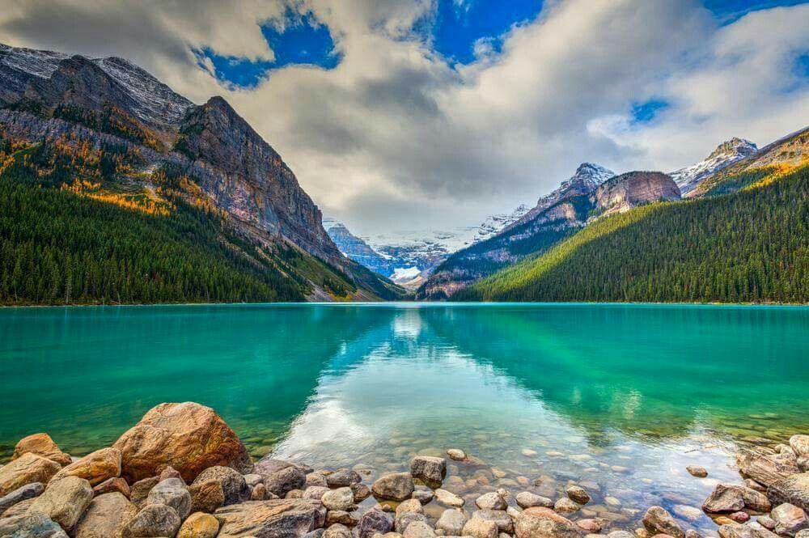
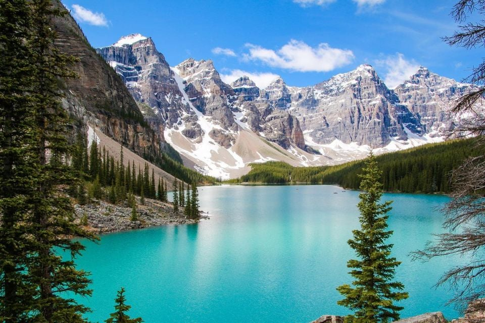

Lac Louise
Les Rocheuses canadiennes sont renommées à travers le monde pour leurs superbes lacs. Si vous demandez à quelqu’un de vous en nommer un, il y a fort à parier qu’il mentionnera en premier le lac Louise. Au fil des années, il est devenu l’endroit le plus connu du parc national de Banff.
Il faut toutefois un peu de planification avant de se rendre à ce célèbre lac. En été, les lieux peuvent être vite pris d’assaut par les touristes, et vous pourriez avoir de la difficulté à y accéder.
Les alentours du lac sont aussi le point de départ de plusieurs sentiers de marche magnifique. Tellement en fait, que j’ai consacré un article entier sur les meilleures randonnées à faire au lac Louise.
C’est pourquoi cet article se veut un guide complet où vous trouverez toutes les informations nécessaires pour visiter le lac Louise. Vous y apprendrez tout ce qu’il vous faut afin que votre expérience soit parfaite, de comment se stationner jusqu’à où manger, en passant par les nombreuses activités à faire.
Lac Moraine
Je me souviens très bien de ma première visite au lac Moraine. En le voyant, j’ai juste dit tabarnak tellement je n’en croyais pas mes yeux. Si vous voyez une photo du lac Moraine sur Instagram, vous vous direz sûrement « Oh c’est impossible que l’eau soit réellement aussi saturée, c’est sûrement un filtre ou de la retouche ». Et bien non. Bienvenue dans le plus grand réservoir de Gatorade bleu au monde.
Dans les dernières années, j’ai vraiment développé une passion pour les lacs turquoise que l’on retrouve en montagne. Habituellement, ce type de paysage se mérite. Il faut en général faire de la randonnée pendant plusieurs heures, voire même des jours pour pouvoir admirer ces joyaux de la nature.
Et si je vous disais que celui que je considère comme le plus beau de tous est accessible en auto? Que vous n’aurez qu’à marcher 100 mètres pour apercevoir son eau incroyablement turquoise? C’est la magie du lac Moraine, un endroit dans les Rocheuses canadiennes presque trop parfait pour être vrai.
